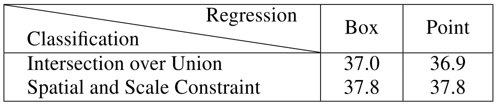
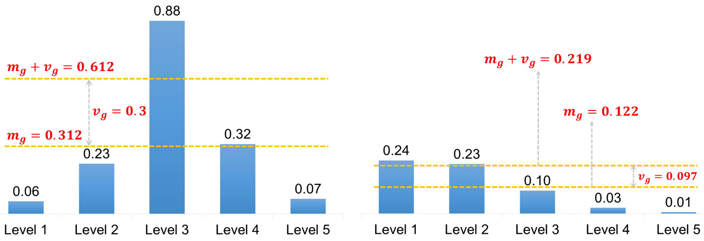

Bridging the Gap Between Anchor-Based and Anchor-Free Detection via Adaptive Training Sample Selection (ATSS)¶
The authors argue that the essential difference between anchor-based and anchor-free detection is how to define positive and negative training samples, no matter regressing from a box or a point. Then they propose an Adaptive Training Sample Selection (ATSS) to automatically select positive and negative samples according to statistical characteristics of object. Experiments show that ATSS can achieve 50.7% AP on MS COCO.
Difference Analysis of Anchor-Based and Anchor-Free Detection¶
Without loss of generality, the representative anchor-based RetinaNet and anchor-free FCOS are adopted to dissect their differences:
The number of anchors tile per location: RetinaNet tiles several anchor boxes per location, while FCOS tiles one anchor point per location.
The definition of positive and negative samples: RetinaNet resorts to IoU for positives and negatives, while FCOS utilizes spatial and scale constraints to select samples.
The regression starting status. RetinaNet regresses the object bounding box from preset anchor box, while FCOS locates the object from the anchor point.
By removing inconsistencies between the two methods, the authors compare the performance of RetinaNet (#A = 1) and FCOS on the MS COCO minival set, and the results are reported below.
{kind=link}
The results in each column demonstrate that the definition of positive and negative samples is an essential difference between anchor-based and anchor-free detectors. The results in each row indicate that the regression starting status is an irrelevant difference.
Adaptive Training Sample Selection¶
The authors propose the ATSS method that automatically divides positive and negative samples according to statistical characteristics of object almost without any hyperparameter.
Here are some motivations behind this method:
Selecting candidates based on the center distance between anchor box and object.
Using the sum of mean and standard deviation as the IoU threshold. This helps to adaptively select enough positives for each object from appropriate pyramid levels in accordance of statistical characteristics of object. The figure below illustrates this method.
Limiting the positive samples' center to object. Althought the IoU of candidates is not a standard normal distribution, the statistical results show that each object has about \(0.2 \times k\mathcal{L}\) positive samples, invariant to its scale, aspect ratio, and location.
Keeping almost hyperparameter-free. Experiments show that results are quite insensitive to the variations of \(k\).
{kind=link}